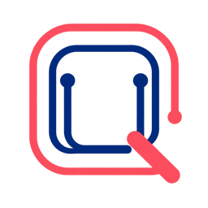
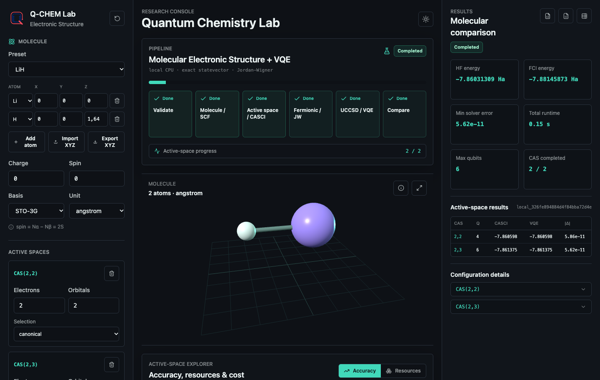
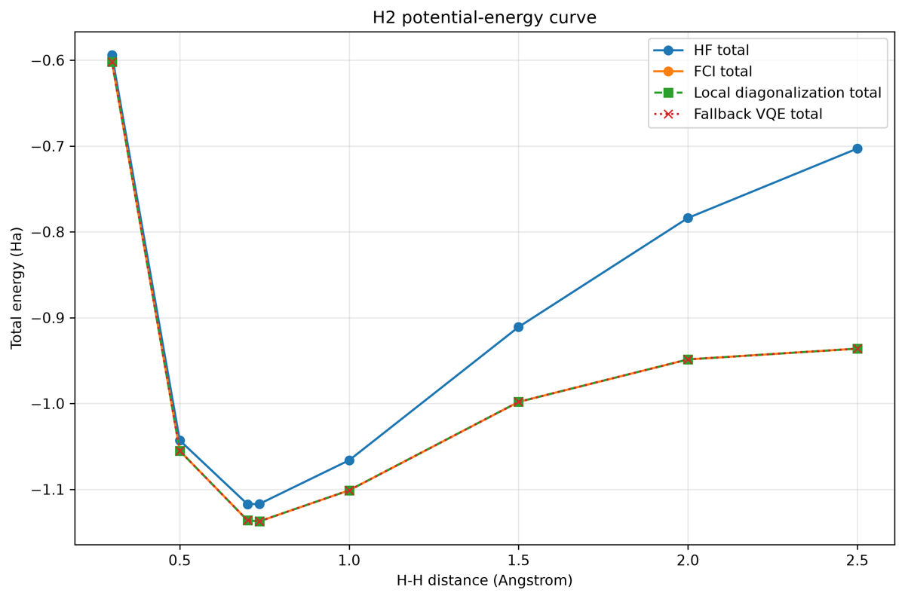
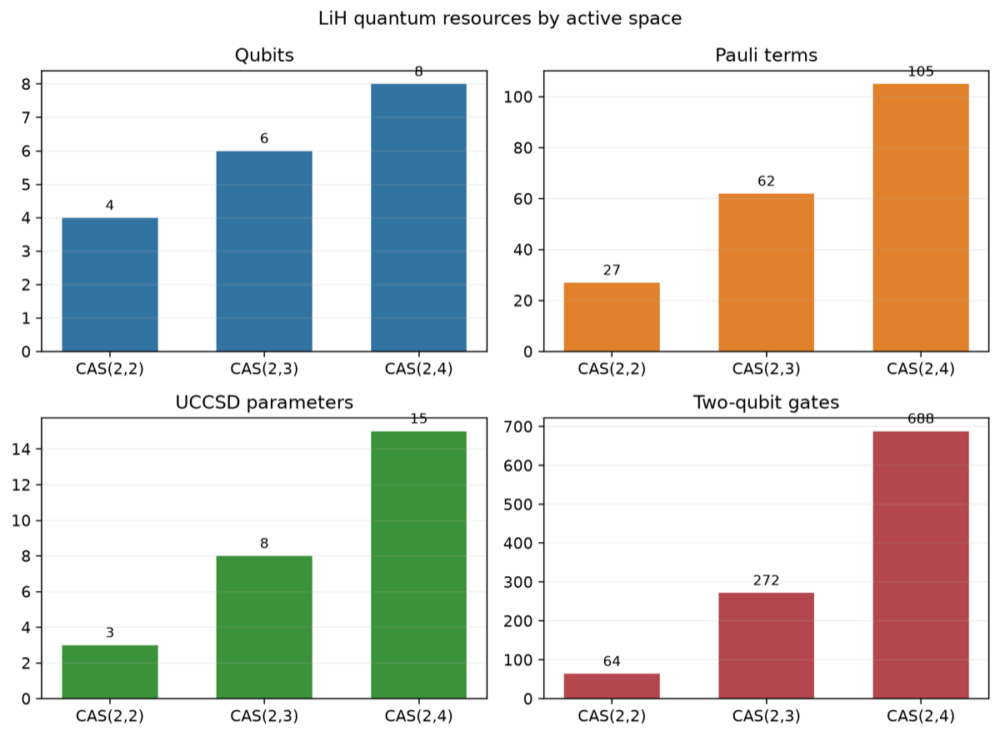

Plateforme ouverte
HF, CASCI, FCI et VQE s'exécutent sur le processeur de l'ordinateur ou du téléphone du visiteur.

H2 / STO-3G
La courbe d'énergie potentielle compare HF, FCI, diagonalisation locale et VQE sur une même convention d'énergie.

LiH / espaces actifs
Plus d'orbitales améliorent le modèle, mais augmentent rapidement les ressources quantiques.
